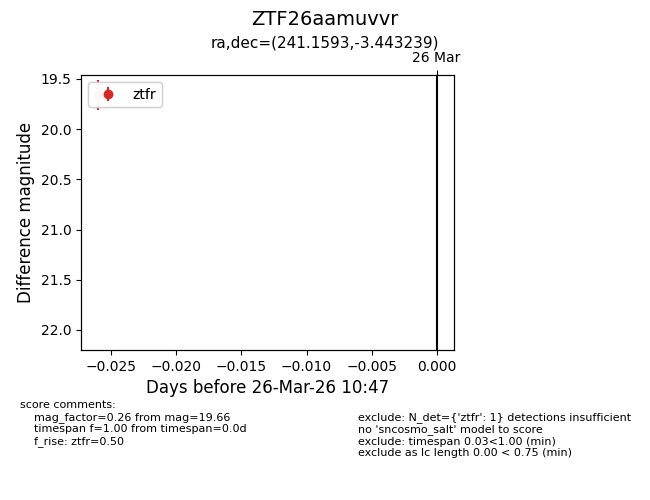
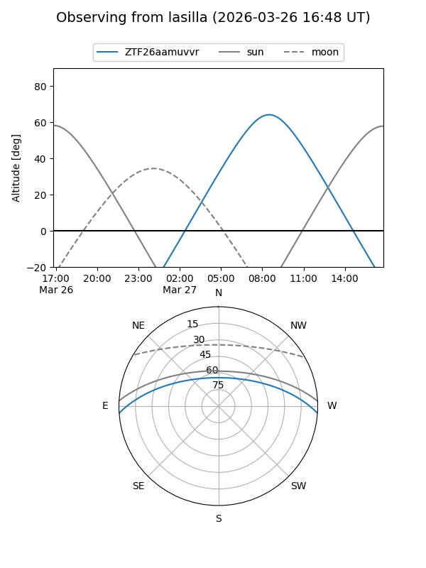
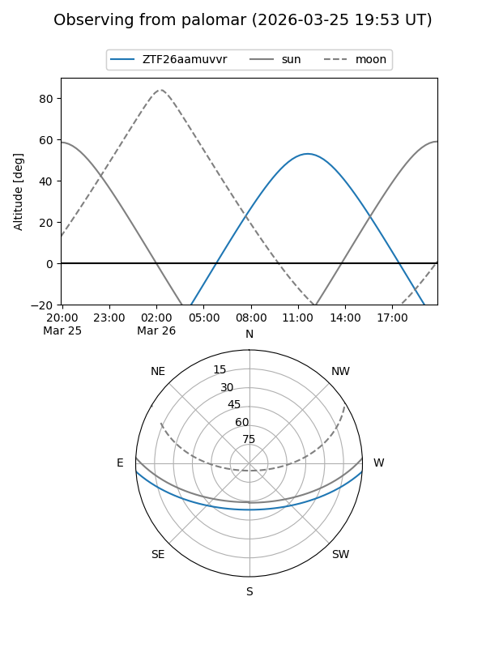

ZTF26aamuvvr
Target ZTF26aamuvvr at 2026-03-26 10:50
Aliases and brokers:
FINK: link
Lasair: link
ALeRCE: link
alt names
ZTF26aamuvvr (ztf,fink_ztf)
Coordinates:
equatorial (ra, dec) = 241.1593,-3.44324
equatorial (HMS+DMS) = 16:04:38.24,-03:26:35.66
galactic (l, b) = (7.3846,+34.30468)
Flags:
Photometry:
last ztfr=19.66
1 ztfr detections
Lightcurve

Visibility


Additional plots